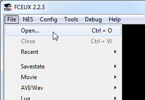
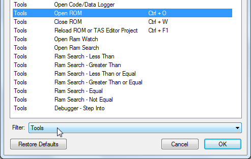
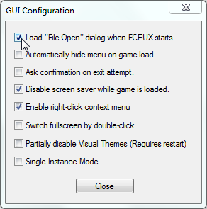
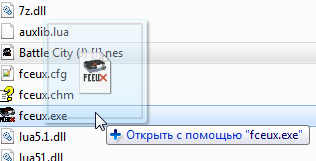
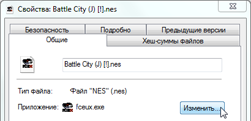

Содержание
Эмулятор может отказаться открыть файл, если в пути к нему или в названии файла есть недопустимые символы.
Запусти файл fceux.exe для открытия эмулятора. В окне эмулятора выбери File -> Open.

Затем найди нужный файл с игрой в окне Open File.
Можно открывать игры, запакованные в .zip архив.
Список последних открытых файлов будет находиться в File -> Recent, можно открывать игры через этот список. Список обновляется после закрытия эмулятора.
Окно Open File запускается горячей клавишей, которая настраивается в Cоnfig -> Map Hotkeys -> Filter -> Tools -> Open ROM.

Можно сделать так, чтобы окно Open File вызывалось автоматически сразу после запуска эмулятора. Для этого выбери Config -> GUI и поставь самую первую галочку.

Еще один способ открыть окно GUI Configuration - кликнуть правой кнопкой посредине окна эмулятора и выбрать самую нижнюю опцию Use Config.
Перетащи файл с игрой на файл fceux.exe.

Также можно перетаскивать файл с игрой на ярлык эмулятора, если, например, вывести ярлык на рабочий стол.
В свойствах любого файла .nes выбери файл fceux.exe как программу для открытия по умолчанию.

После сохранения настроек запусти файл .nes, и эмулятор откроется вместе с этой игрой.
Если изменить местоположение файла fceux.exe, вероятно потребуется заново зайти в свойства файла .nes и выбрать fceux.exe из той папки, куда был перемещен эмулятор.